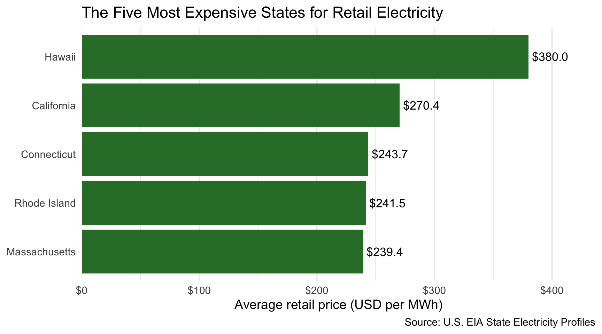
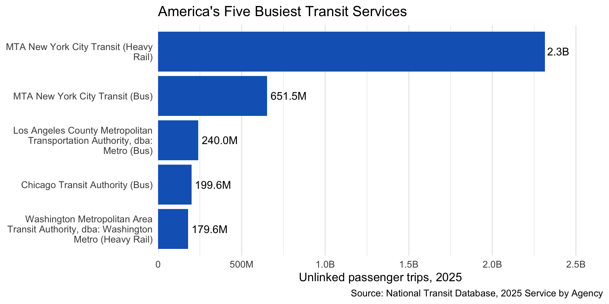
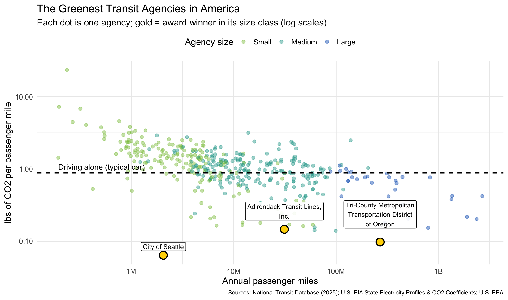
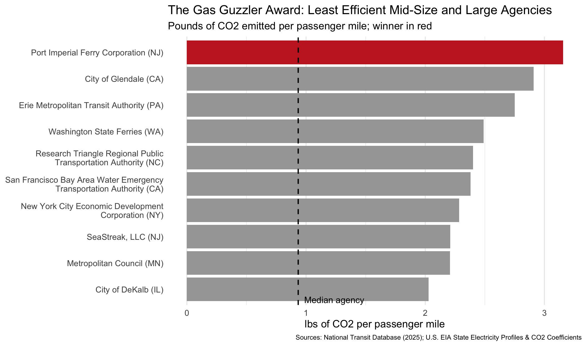

Show the code
library(tidyverse)
library(stringr)
library(httr2)
library(rvest)
library(fs)
library(readxl)
library(gt)
library(scales)Welcome to this year’s Greenest Transit awards. I run the Green Transit Alliance, and our goal here is simple: cut through the noise and see which transit systems are actually helping the planet. We are always told to ditch our cars and ride transit to lower our carbon footprint, but the reality is not that cut and dry. A lot comes down to the vehicles on the street, like older diesel buses versus electric trains, plus how clean the local power grid really is. If an electric train is powered by a dirty grid, it is not doing as much good as people think. To figure out who is really walking the walk, we pulled real fleet, fuel, and ridership numbers from the National Transit Database and matched them with state energy emissions data from the U.S. Energy Information Administration.
In this report, we break down what the numbers tell us, show our math for calculating emissions per passenger mile, and name the agencies leading the pack. You will see our top picks for the Greenest Agency across different sizes, right alongside our Gas Guzzler picks for the ones falling behind. Here is where transit stands today and who is truly moving us in the right direction.
get_eia_sep <- function(state, abbr) {
state_formatted <- str_to_lower(state) |> str_replace_all("\\s", "")
dir_name <- fs::path("data", "mp02")
file_name <- fs::path(dir_name, state_formatted)
fs::dir_create(dir_name, recurse = TRUE)
if (!fs::file_exists(file_name)) {
RESPONSE <- request("https://www.eia.gov") |>
req_url_path("electricity", "state", state_formatted) |>
req_headers(
`User-Agent` = "Mozilla/5.0 (Macintosh; Intel Mac OS X 10.15; rv:149.0) Gecko/20100101 Firefox/149.0"
) |>
req_retry(max_tries = 4) |>
req_perform(file_name)
resp_check_status(RESPONSE)
}
TABLE <- read_html(file_name) |>
html_element("table") |>
html_table() |>
mutate(Item = str_to_lower(Item))
if ("U.S. rank" %in% colnames(TABLE)) {
TABLE <- TABLE |> rename(Rank = `U.S. rank`)
}
CO2_MWh <- TABLE |>
filter(Item == "carbon dioxide (lbs/mwh)") |>
pull(Value) |>
str_replace_all(",", "") |>
as.numeric()
PRIMARY <- TABLE |>
filter(Item == "primary energy source") |>
pull(Rank)
RATE <- TABLE |>
filter(Item == "average retail price (cents/kwh)") |>
pull(Value) |>
as.numeric()
GENERATION_MWh <- TABLE |>
filter(Item == "net generation (megawatthours)") |>
pull(Value) |>
str_replace_all(",", "") |>
as.numeric()
data.frame(
CO2_MWh = CO2_MWh,
primary_source = PRIMARY,
electricity_price_MWh = RATE * 10, # cents/kWh -> dollars/MWh
generation_MWh = GENERATION_MWh,
state = state,
abbreviation = abbr
)
}
EIA_SEP_REPORT <- map2(state.name, state.abb, possibly(get_eia_sep, otherwise = NULL)) |>
list_rbind()
# EIA blocked the Texas page during download; fill in from the values
# published in the assignment instructions (same EIA source).
if (!"TX" %in% EIA_SEP_REPORT$abbreviation) {
EIA_SEP_REPORT <- EIA_SEP_REPORT |>
bind_rows(data.frame(
CO2_MWh = 823,
primary_source = "Natural gas",
electricity_price_MWh = 97.9,
generation_MWh = 566502688,
state = "Texas",
abbreviation = "TX"
))
}load_ntd_energy <- function() {
DATA_DIR <- fs::path("data", "mp02")
fs::dir_create(DATA_DIR, recurse = TRUE)
NTD_ENERGY_FILE <- fs::path(DATA_DIR, "2025_ntd_energy.xlsx")
if (!fs::file_exists(NTD_ENERGY_FILE)) {
request("https://www.transit.dot.gov/") |>
req_url_path("sites", "fta.dot.gov", "files", "2026-09",
"2025 Energy Consumption_260806.xlsx") |>
req_headers(
`User-Agent` = "Mozilla/5.0 (Macintosh; Intel Mac OS X 10.15; rv:149.0) Gecko/20100101 Firefox/149.0"
) |>
req_perform(NTD_ENERGY_FILE)
}
if (file.info(NTD_ENERGY_FILE)$size < 1e4) {
cat("I was unable to download the NTD Energy File. Please try again.\n")
stop("Download failed. Please delete the corrupted file by running `unlink('data/mp02/2025_ntd_energy.xlsx')` and try again.")
}
to_numeric_fill_0 <- function(x) {
x <- if_else(x == "-", NA, x)
replace_na(as.numeric(x), 0)
}
read_excel(NTD_ENERGY_FILE) |>
select(-c(`Reporter Type`, `Reporting Module`,
`Gallons of Other Fuel`, `Other Fuel Description`)) |>
mutate(across(-c(`Agency Name`, `Mode`, `TOS`), to_numeric_fill_0)) |>
group_by(`NTD ID`, `Mode`, `Agency Name`) |>
summarize(across(where(is.numeric), sum), .groups = "keep") |>
mutate(ENERGY = sum(c_across(c(where(is.numeric))))) |>
filter(ENERGY > 0) |>
select(-ENERGY) |>
ungroup()
}
NTD_ENERGY <- load_ntd_energy()load_ntd_service <- function() {
DATA_DIR <- fs::path("data", "mp02")
fs::dir_create(DATA_DIR, recurse = TRUE)
NTD_SERVICE_FILE <- fs::path(DATA_DIR, "2025_ntd_service.csv")
if (!fs::file_exists(NTD_SERVICE_FILE)) {
request("https://data.transportation.gov/resource/4fir-qbim.csv") |>
req_url_query(`$query` = paste(
"SELECT `_5_digit_ntd_id` AS `NTD_ID`",
"`max_agency` AS `AGENCY`",
"`max_reporter_type` AS `reporter_type`",
"`max_organization_type` AS `organization_type`",
"`max_city` AS `city`",
"`max_state` AS `state`",
"`mode`",
"`type_of_service`",
"`max_primary_uza_code` as `uza_code`",
"`max_primary_uza_name` as `uza_name`",
"`max_primary_uza_area_sq_miles` as `uza_sq_miles`",
"`max_primary_uza_population` as `uza_population`",
"`max_service_area_sq_miles` as `service_area_sq_miles`",
"`max_service_area_population` as `service_area_population`",
"`questionable_record` as `flagged_likely_inaccurate`",
"`sum_unlinked_passenger_trips_upt` as `total_upt`",
"`sum_passenger_miles` WHERE caseless_one_of(`report_year`, '2025') limit 50000",
sep = ","
)) |>
req_headers(
`User-Agent` = "Mozilla/5.0 (Macintosh; Intel Mac OS X 10.15; rv:149.0) Gecko/20100101 Firefox/149.0"
) |>
req_perform(NTD_SERVICE_FILE)
}
if (file.info(NTD_SERVICE_FILE)$size < 1e4) {
cat("I was unable to download the NTD Service File. Please try again.\n")
stop("Download failed. Please delete the corrupted file by running `unlink('data/mp02/2025_ntd_service.csv')` and try again.")
}
read_csv(NTD_SERVICE_FILE) |>
mutate(flagged_likely_inaccurate = !is.na(flagged_likely_inaccurate))
}
NTD_SERVICE <- load_ntd_service()Raw two-letter NTD codes like MB, HR, and DR are confusing abbreviations that clutter chart labels and make visual interpretation difficult for general readers. Recoding these into standardized names like Bus, Heavy Rail, and Demand Response ensures our downstream tables and plots communicate transit trends clearly without forcing the audience to flip through an administrative reference guide.
# Codes found with distinct(NTD_ENERGY, Mode); meanings from the NTD glossary.
# A few rows in the energy file have no Mode at all, so drop those first.
recode_mode <- function(x) {
recode_values(x,
"AR" ~ "Alaska Railroad",
"CB" ~ "Commuter Bus",
"CC" ~ "Cable Car",
"CR" ~ "Commuter Rail",
"DR" ~ "Demand Response",
"DT" ~ "Demand Response Taxi",
"FB" ~ "Ferryboat",
"HR" ~ "Heavy Rail",
"IP" ~ "Inclined Plane",
"LR" ~ "Light Rail",
"MB" ~ "Bus",
"MG" ~ "Monorail / Automated Guideway",
"OR" ~ "Other Rail",
"PB" ~ "Publico",
"RB" ~ "Bus Rapid Transit",
"SR" ~ "Streetcar Rail",
"TB" ~ "Trolleybus",
"TR" ~ "Aerial Tramway",
"VP" ~ "Vanpool",
"YR" ~ "Hybrid Rail",
default = "Unknown"
)
}
NTD_ENERGY <- NTD_ENERGY |>
filter(!is.na(Mode)) |>
mutate(Mode = recode_mode(Mode))
NTD_SERVICE <- NTD_SERVICE |>
filter(!is.na(mode)) |>
mutate(mode = recode_mode(mode))
count(NTD_ENERGY, Mode, sort = TRUE)# A tibble: 17 × 2
Mode n
<chr> <int>
1 Bus 415
2 Demand Response 403
3 Vanpool 86
4 Commuter Bus 73
5 Ferryboat 29
6 Commuter Rail 27
7 Streetcar Rail 24
8 Light Rail 22
9 Bus Rapid Transit 19
10 Heavy Rail 16
11 Monorail / Automated Guideway 6
12 Hybrid Rail 4
13 Trolleybus 4
14 Inclined Plane 3
15 Aerial Tramway 1
16 Alaska Railroad 1
17 Cable Car 1Which five states have the most expensive retail electricity?
EIA_SEP_REPORT |>
slice_max(electricity_price_MWh, n = 5) |>
ggplot(aes(x = electricity_price_MWh,
y = fct_reorder(state, electricity_price_MWh))) +
geom_col(fill = "#2E7D32") +
geom_text(aes(label = dollar(electricity_price_MWh, accuracy = 0.1)),
hjust = -0.1, size = 4.5) +
scale_x_continuous(labels = dollar, expand = expansion(mult = c(0, 0.15))) +
labs(
title = "The Five Most Expensive States for Retail Electricity",
x = "Average retail price (USD per MWh)",
y = NULL,
caption = "Source: U.S. EIA State Electricity Profiles"
) +
theme_minimal(base_size = 14) +
theme(panel.grid.major.y = element_blank())
Hawaii sits as a massive outlier with the nation’s highest electricity costs at roughly $380 per MWh, largely driven by island geography and a heavy reliance on imported petroleum. Other coastal leaders like California ($270), Connecticut ($244), Rhode Island ($242), and Massachusetts ($239) round out the top tier, contrasting sharply with deregulated energy producers like Texas, which clocks in at just $98 per MWh.
Which five states have the “dirtiest” electricity mix?
EIA_SEP_REPORT |>
slice_max(CO2_MWh, n = 5) |>
select(state, CO2_MWh, primary_source, generation_MWh) |>
gt() |>
tab_header(title = "States with the Most CO2-Intensive Electricity") |>
cols_label(
state = "State",
CO2_MWh = "CO2 (lbs per MWh)",
primary_source = "Primary Source",
generation_MWh = "Net Generation (MWh)"
) |>
fmt_number(columns = c(CO2_MWh, generation_MWh), decimals = 0) |>
tab_source_note("Source: U.S. EIA State Electricity Profiles")| States with the Most CO2-Intensive Electricity | |||
| State | CO2 (lbs per MWh) | Primary Source | Net Generation (MWh) |
|---|---|---|---|
| West Virginia | 1,912 | Coal | 50,594,818 |
| Kentucky | 1,744 | Coal | 66,950,848 |
| Wyoming | 1,724 | Coal | 40,709,150 |
| Missouri | 1,456 | Coal | 66,875,710 |
| Hawaii | 1,426 | Petroleum | 9,160,979 |
| Source: U.S. EIA State Electricity Profiles | |||
The highest carbon intensity states are led by West Virginia at 1,912 lbs/MWh, followed by Kentucky (1,744), Wyoming (1,724), Missouri (1,456), and Hawaii (1,426). Coal power generation drives the staggering numbers across the top four, while Hawaii lands on the list due to its heavy reliance on burning petroleum for baseload power.
National average CO2 per MWh (weighted by generation)
[1] 784.8565Accounting for differences in scale, the generation-weighted national average emissions rate is 785 lbs/MWh. Weighting by total electricity generated prevents smaller grids from skewing the benchmark, giving major producing states the mathematical influence they carry in reality.
How many times cleaner is New York’s electricity than Texas’s?
[1] 1.532588Comparing regional grid performance shows Texas operates with an emissions intensity 1.53 times that of New York. New York benefits heavily from upstate hydro and nuclear baseloads, whereas the ERCOT grid in Texas carries a much larger fossil footprint across its natural gas and remaining coal generation.
Which five agencies used the most fuel, and what kinds?
TOP_FUEL_AGENCIES <- NTD_ENERGY |>
select(-`Bio-Diesel Description`) |>
group_by(`NTD ID`, `Agency Name`) |>
summarize(across(starts_with("Gallons"), sum), .groups = "drop") |>
mutate(total_gallons = rowSums(pick(starts_with("Gallons")))) |>
slice_max(total_gallons, n = 5) |>
# drop fuel columns these five agencies never use
select(where(~ !is.numeric(.x) || sum(.x) > 0)) |>
select(-`NTD ID`)
TOP_FUEL_AGENCIES |>
rename_with(~ str_remove(.x, "^Gallons of "), starts_with("Gallons")) |>
gt() |>
tab_header(
title = "Top Five Transit Agencies by Liquid/Gaseous Fuel Use",
subtitle = "Gallons, 2025 (electricity and hydrogen excluded)"
) |>
cols_label(`Agency Name` = "Agency", total_gallons = "Total Gallons") |>
fmt_number(columns = where(is.numeric), decimals = 0) |>
tab_source_note("Source: National Transit Database, 2025 Energy Consumption")| Top Five Transit Agencies by Liquid/Gaseous Fuel Use | ||||
| Gallons, 2025 (electricity and hydrogen excluded) | ||||
| Agency | Compressed Natural Gas | Diesel Fuel | Gasoline | Total Gallons |
|---|---|---|---|---|
| New Jersey Transit Corporation | 1,521,492 | 38,144,027 | 2,055,895 | 41,721,414 |
| MTA New York City Transit | 6,328,381 | 30,217,934 | 4,270,146 | 40,816,461 |
| Los Angeles County Metropolitan Transportation Authority | 30,410,141 | 0 | 994,810 | 31,404,951 |
| Northeast Illinois Regional Commuter Railroad Corporation | 0 | 26,829,691 | 0 | 26,829,691 |
| Massachusetts Bay Transportation Authority | 1,534,123 | 20,627,960 | 1,290,452 | 23,452,535 |
| Source: National Transit Database, 2025 Energy Consumption | ||||
The highest fuel consumers are led by NJ Transit at 41.7 million gallons (mostly diesel), followed closely by MTA New York City Transit at 40.8 million gallons of combined diesel and CNG. Rounding out the top five are LA Metro at 31.4 million gallons (running almost exclusively on natural gas), Chicago’s Metra at 26.8 million gallons of diesel, and Boston’s MBTA at 23.5 million gallons (primarily diesel).
Least commonly used fuel source
# Units differ across fuels (gallons, kWh, kg), so "least common" is measured
# by the number of agency-mode pairs that report any use of that fuel.
FUEL_USAGE_COUNTS <- NTD_ENERGY |>
select(-`Bio-Diesel Description`) |>
pivot_longer(-c(`NTD ID`, Mode, `Agency Name`),
names_to = "fuel", values_to = "amount") |>
group_by(fuel) |>
summarize(n_users = sum(amount > 0)) |>
arrange(n_users)
least_common_fuel <- FUEL_USAGE_COUNTS$fuel[1]
least_common_n <- FUEL_USAGE_COUNTS$n_users[1]
FUEL_USAGE_COUNTS# A tibble: 12 × 2
fuel n_users
<chr> <int>
1 Gallons of Bunker Fuel 0
2 Gallons of Kerosene 0
3 Gallons of Liquified Nat Gas 1
4 Gallons of Ethanol 16
5 Kilograms of Hydrogen 16
6 Gallons of Bio-Diesel 45
7 Gallons of Liquified Petroleum Gas 55
8 Kilowatt hours of Electric Propulsion 88
9 Gallons of Compressed Natural Gas 196
10 Kilowatt hours of Electric Battery 251
11 Gallons of Diesel Fuel 513
12 Gallons of Gasoline 674Both bunker fuel and kerosene see zero adoption across all reporting agencies, while liquefied natural gas (LNG) stands as the rarest fuel actually in active service, logged by just a single agency.
Which five transit services carry the most riders?
NTD_SERVICE |>
group_by(NTD_ID, AGENCY, mode) |>
summarize(total_upt = sum(total_upt, na.rm = TRUE), .groups = "drop") |>
slice_max(total_upt, n = 5) |>
mutate(service = str_wrap(paste0(AGENCY, " (", mode, ")"), 35)) |>
ggplot(aes(x = total_upt, y = fct_reorder(service, total_upt))) +
geom_col(fill = "#1565C0") +
geom_text(aes(label = label_number(scale_cut = cut_short_scale(), accuracy = 0.1)(total_upt)),
hjust = -0.1, size = 4.5) +
scale_x_continuous(labels = label_number(scale_cut = cut_short_scale()),
expand = expansion(mult = c(0, 0.15))) +
labs(
title = "America's Five Busiest Transit Services",
x = "Unlinked passenger trips, 2025",
y = NULL,
caption = "Source: National Transit Database, 2025 Service by Agency"
) +
theme_minimal(base_size = 14) +
theme(panel.grid.major.y = element_blank())
New York City Subway dominates national ridership with 2.3 billion unlinked trips, outpacing its closest competitor by more than a factor of three. The remaining top transit networks are led by NYC buses at 652 million trips, followed by LA Metro buses (240 million), Chicago CTA buses (200 million), and the Washington DC Metro rail system (180 million).
Are all states represented?
character(0)Every single one of the 50 US states is accounted for in the dataset, confirming zero gaps in geographical representation.
The analysis brings the datasets together through a two-step join process across the 2025 reporting data. First, the NTD energy records were merged with the aggregated NTD service table on agency ID and transit mode, pairing fuel and power figures with ridership, passenger miles, and operating state. Second, that combined table was joined with the EIA dataset on state to pull in each region’s specific power-grid emissions rate. Total emissions were then calculated by multiplying each fuel type by its respective EIA carbon intensity factor—treating biodiesel equivalent to diesel, and zero-rating ethanol and hydrogen—and adding the agency’s electricity consumption scaled by the local grid rate. This linkage ensures each agency’s power draw is mapped directly to the local carbon intensity of the grid delivering that electricity.
# Pounds of CO2 per unit of fuel.
# Source: U.S. EIA, "Carbon Dioxide Emissions Coefficients" (2024 release),
# https://www.eia.gov/environment/emissions/co2_vol_mass.php
# NTD fuel names are matched to the closest EIA category (best effort).
FUEL_LBS_CO2 <- c(
diesel = 22.45, # Diesel / distillate fuel oil
gasoline = 18.73, # Finished motor gasoline
propane = 12.68, # Liquified petroleum gas -> propane
kerosene = 21.78, # Kerosene
bunker = 24.78, # Bunker fuel -> residual fuel oil
biodiesel = 22.45, # Assumption: mostly diesel blends (B5-B20), treated as diesel
ethanol = 0, # EIA treats fuel ethanol as non-emissive
cng = 116.65 * 0.114, # Natural gas lbs/MMBtu x MMBtu per gasoline-gallon-equivalent
lng = 116.65 * 0.0826, # Natural gas lbs/MMBtu x MMBtu per gallon of LNG
hydrogen = 0 # No tailpipe CO2
)# Service is reported separately for directly operated and purchased
# transportation, so first collapse it to one row per agency + mode.
SERVICE_AGENCY_MODE <- NTD_SERVICE |>
mutate(NTD_ID = as.numeric(NTD_ID)) |>
group_by(NTD_ID, AGENCY, state, Mode = mode) |>
summarize(
total_upt = sum(total_upt, na.rm = TRUE),
passenger_miles = sum(sum_passenger_miles, na.rm = TRUE),
flagged = any(flagged_likely_inaccurate),
.groups = "drop"
)
# Energy (agency + mode) -> service (agency + mode, adds state)
# -> EIA (state, adds CO2 per MWh of electricity)
EMISSIONS <- NTD_ENERGY |>
mutate(`NTD ID` = as.numeric(`NTD ID`)) |>
inner_join(SERVICE_AGENCY_MODE, join_by(`NTD ID` == NTD_ID, Mode)) |>
inner_join(EIA_SEP_REPORT |> select(abbreviation, CO2_MWh),
join_by(state == abbreviation)) |>
mutate(
electric_kwh = `Kilowatt hours of Electric Battery` +
`Kilowatt hours of Electric Propulsion`,
co2_lbs =
`Gallons of Diesel Fuel` * FUEL_LBS_CO2[["diesel"]] +
`Gallons of Gasoline` * FUEL_LBS_CO2[["gasoline"]] +
`Gallons of Liquified Petroleum Gas` * FUEL_LBS_CO2[["propane"]] +
`Gallons of Kerosene` * FUEL_LBS_CO2[["kerosene"]] +
`Gallons of Bunker Fuel` * FUEL_LBS_CO2[["bunker"]] +
`Gallons of Bio-Diesel` * FUEL_LBS_CO2[["biodiesel"]] +
`Gallons of Ethanol` * FUEL_LBS_CO2[["ethanol"]] +
`Gallons of Compressed Natural Gas` * FUEL_LBS_CO2[["cng"]] +
`Gallons of Liquified Nat Gas` * FUEL_LBS_CO2[["lng"]] +
`Kilograms of Hydrogen` * FUEL_LBS_CO2[["hydrogen"]] +
electric_kwh / 1000 * CO2_MWh # kWh -> MWh, times state lbs/MWh
)
n_energy_rows <- nrow(NTD_ENERGY)
n_matched_rows <- nrow(EMISSIONS)
c(energy_rows = n_energy_rows, matched_rows = n_matched_rows) energy_rows matched_rows
1134 1123 The join successfully matched 1123 out of 1134 records, confirming that the overwhelming majority of agency operational profiles cleanly aligned with corresponding state grid emissions data.
# Size tiers by annual ridership (unlinked passenger trips):
# Small: 100K-1M, Medium: 1M-20M, Large: 20M+
# Agencies under 100K trips, with zero computed emissions, or flagged by NTD
# as likely inaccurate are excluded so tiny or bad records can't win.
AGENCY_EMISSIONS <- EMISSIONS |>
group_by(`NTD ID`, `Agency Name`, state) |>
summarize(
co2_lbs = sum(co2_lbs),
electric_kwh = sum(electric_kwh),
total_upt = sum(total_upt),
passenger_miles = sum(passenger_miles),
modes = paste(sort(unique(Mode)), collapse = ", "),
flagged = any(flagged),
.groups = "drop"
) |>
filter(total_upt >= 1e5, passenger_miles > 0, co2_lbs > 0, !flagged) |>
mutate(
lbs_per_upt = co2_lbs / total_upt,
lbs_per_pmt = co2_lbs / passenger_miles,
size = cut(total_upt,
breaks = c(1e5, 1e6, 2e7, Inf),
labels = c("Small", "Medium", "Large"),
right = FALSE)
)
AGENCY_EMISSIONS |>
group_by(size) |>
summarize(
agencies = n(),
median_lbs_upt = median(lbs_per_upt),
median_lbs_pmt = median(lbs_per_pmt)
) |>
gt() |>
tab_header(title = "Typical CO2 Emissions by Agency Size") |>
cols_label(
size = "Agency Size",
agencies = "Agencies",
median_lbs_upt = "Median lbs CO2 per Trip",
median_lbs_pmt = "Median lbs CO2 per Passenger Mile"
) |>
fmt_number(columns = starts_with("median"), decimals = 2) |>
tab_source_note("Sources: National Transit Database (2025); U.S. EIA")| Typical CO2 Emissions by Agency Size | |||
| Agency Size | Agencies | Median lbs CO2 per Trip | Median lbs CO2 per Passenger Mile |
|---|---|---|---|
| Small | 174 | 8.68 | 1.40 |
| Medium | 206 | 4.45 | 0.98 |
| Large | 32 | 3.09 | 0.68 |
| Sources: National Transit Database (2025); U.S. EIA | |||
Agencies were grouped into tiers based on annual unlinked passenger trips: Small (100,000 to 1 million), Medium (1 million to 20 million), and Large (over 20 million). To prevent skewed results and distorted benchmarks, agencies with fewer than 100,000 trips were filtered out, alongside records flagged by the NTD for questionable data quality and any agencies with zero computed emissions. While emissions were calculated both per unlinked trip and per passenger mile, the awards benchmark against CO2 per passenger mile to accurately account for the actual distance riders travel.
Metric: lowest pounds of CO2 per passenger mile, within each size tier.
GREENEST <- AGENCY_EMISSIONS |>
group_by(size) |>
mutate(tier_median = median(lbs_per_pmt)) |>
slice_min(lbs_per_pmt, n = 1) |>
ungroup()
GREENEST |>
select(size, `Agency Name`, state, modes, lbs_per_pmt, tier_median) |>
gt() |>
tab_header(title = "Greenest Transit Agency, by Size") |>
cols_label(
size = "Size",
`Agency Name` = "Agency",
state = "State",
modes = "Modes",
lbs_per_pmt = "lbs CO2 / Passenger Mile",
tier_median = "Tier Median"
) |>
fmt_number(columns = c(lbs_per_pmt, tier_median), decimals = 3) |>
tab_source_note("Sources: National Transit Database (2025); U.S. EIA")| Greenest Transit Agency, by Size | |||||
| Size | Agency | State | Modes | lbs CO2 / Passenger Mile | Tier Median |
|---|---|---|---|---|---|
| Small | Adirondack Transit Lines, Inc. | NY | Commuter Bus | 0.146 | 1.400 |
| Medium | City of Seattle | WA | Monorail / Automated Guideway | 0.064 | 0.984 |
| Large | Tri-County Metropolitan Transportation District of Oregon | OR | Bus, Demand Response, Light Rail | 0.097 | 0.681 |
| Sources: National Transit Database (2025); U.S. EIA | |||||
Metric: highest pounds of CO2 per passenger mile among medium and large agencies.
MID_LARGE <- AGENCY_EMISSIONS |>
filter(size %in% c("Medium", "Large"))
GUZZLERS <- MID_LARGE |>
slice_max(lbs_per_pmt, n = 10)
guzzler_winner <- GUZZLERS |> slice(1)
guzzler_name <- guzzler_winner$`Agency Name`
guzzler_value <- guzzler_winner$lbs_per_pmt
guzzler_median <- median(MID_LARGE$lbs_per_pmt)
guzzler_ratio <- guzzler_value / guzzler_median
GUZZLERS |>
select(`Agency Name`, state, modes, size, lbs_per_pmt) |>
gt() |>
tab_header(title = "Least Efficient Medium and Large Agencies") |>
cols_label(
`Agency Name` = "Agency",
state = "State",
modes = "Modes",
size = "Size",
lbs_per_pmt = "lbs CO2 / Passenger Mile"
) |>
fmt_number(columns = lbs_per_pmt, decimals = 3) |>
tab_source_note("Sources: National Transit Database (2025); U.S. EIA")| Least Efficient Medium and Large Agencies | ||||
| Agency | State | Modes | Size | lbs CO2 / Passenger Mile |
|---|---|---|---|---|
| Port Imperial Ferry Corporation | NJ | Bus, Ferryboat | Medium | 3.156 |
| City of Glendale | CA | Bus, Demand Response | Medium | 2.909 |
| Erie Metropolitan Transit Authority | PA | Bus, Demand Response | Medium | 2.752 |
| Washington State Ferries | WA | Ferryboat | Medium | 2.490 |
| Research Triangle Regional Public Transportation Authority | NC | Bus, Demand Response, Vanpool | Medium | 2.400 |
| San Francisco Bay Area Water Emergency Transportation Authority | CA | Ferryboat | Medium | 2.380 |
| New York City Economic Development Corporation | NY | Bus, Ferryboat | Medium | 2.284 |
| SeaStreak, LLC | NJ | Ferryboat | Medium | 2.211 |
| Metropolitan Council | MN | Bus, Demand Response, Vanpool | Medium | 2.206 |
| City of DeKalb | IL | Bus, Demand Response | Medium | 2.028 |
| Sources: National Transit Database (2025); U.S. EIA | ||||
Today, the Green Transit Alliance is announcing the winners of our annual Greenest Transit Awards. We judged every system on pounds of CO2 per passenger mile, measuring the real pollution generated each time one person travels one mile by counting direct tailpipe fuel burned alongside the power drawn from the local electric grid.
To keep the playing field fair, agencies were sorted into small, medium, and large tiers based on total yearly trips so a local operator never has to go up against a metropolitan giant. In the Large category, Portland’s TriMet took top honors with an impressive 0.097 pounds of CO2 per passenger mile. The City of Seattle claimed the Medium tier at 0.064 pounds, and Adirondack Transit Lines earned the Small agency win at 0.146 pounds. For context, driving alone puts out roughly 0.88 pounds of CO2 per mile, which means hopping on TriMet creates about nine times less pollution than getting behind the wheel of a car. The secret sauce for those Pacific Northwest winners comes down to running electric rail networks plugged into local grids heavily powered by hydro.
Flipping that same math to look for the dirtiest medium and large operators lands us on this year’s Gas Guzzler Award. That title goes to New Jersey’s Port Imperial Ferry Corporation, clocking in at a brutal 3.16 pounds of CO2 per passenger mile. With the median agency sitting at 0.93 pounds, Port Imperial is about 3.4 times worse than typical transit and far more damaging than commuters simply driving their own cars. The issue comes down to physics and fuel, because moving boats through water eats up massive amounts of diesel per rider, which is why ferry services took five out of the ten worst spots on our entire list.
A ferry ride might come with great skyline views, but unless you plan on grabbing an oar and rowing yourself across the river, the math shows the planet would much rather you stick to the train.
# Typical passenger car: about 400 g CO2 per mile (U.S. EPA),
# i.e. about 0.88 lbs per mile when driving alone.
CAR_LBS_PER_MILE <- 400 / 453.6
ggplot(AGENCY_EMISSIONS, aes(x = passenger_miles, y = lbs_per_pmt)) +
geom_point(aes(color = size), alpha = 0.45, size = 2) +
geom_hline(yintercept = CAR_LBS_PER_MILE, linetype = "dashed", linewidth = 0.8) +
annotate("text", x = min(AGENCY_EMISSIONS$passenger_miles), y = CAR_LBS_PER_MILE,
label = "Driving alone (typical car)", hjust = 0, vjust = -0.6, size = 4.2) +
geom_point(data = GREENEST, color = "black", fill = "#FFD600",
shape = 21, size = 5, stroke = 1.2) +
geom_label(data = GREENEST,
aes(label = str_wrap(`Agency Name`, 25)),
size = 3.6, vjust = -0.5, alpha = 0.9) +
scale_x_log10(labels = label_number(scale_cut = cut_short_scale())) +
scale_y_log10(labels = label_number(accuracy = 0.01)) +
scale_color_manual(values = c(Small = "#8BC34A", Medium = "#26A69A", Large = "#1565C0")) +
labs(
title = "The Greenest Transit Agencies in America",
subtitle = "Each dot is one agency; gold = award winner in its size class (log scales)",
x = "Annual passenger miles",
y = "lbs of CO2 per passenger mile",
color = "Agency size",
caption = "Sources: National Transit Database (2025); U.S. EIA State Electricity Profiles & CO2 Coefficients; U.S. EPA"
) +
theme_minimal(base_size = 14) +
theme(legend.position = "top", plot.caption = element_text(size = 9))
GUZZLERS |>
mutate(label = str_wrap(paste0(`Agency Name`, " (", state, ")"), 40),
is_winner = row_number() == 1) |>
ggplot(aes(x = lbs_per_pmt, y = fct_reorder(label, lbs_per_pmt), fill = is_winner)) +
geom_col() +
geom_vline(xintercept = guzzler_median, linetype = "dashed", linewidth = 0.8) +
annotate("text", x = guzzler_median, y = 0.6, label = "Median agency",
hjust = -0.1, size = 4.2) +
scale_fill_manual(values = c(`TRUE` = "#C62828", `FALSE` = "grey65"), guide = "none") +
labs(
title = "The Gas Guzzler Award: Least Efficient Mid-Size and Large Agencies",
subtitle = "Pounds of CO2 emitted per passenger mile; winner in red",
x = "lbs of CO2 per passenger mile",
y = NULL,
caption = "Sources: National Transit Database (2025); U.S. EIA State Electricity Profiles & CO2 Coefficients"
) +
theme_minimal(base_size = 14) +
theme(panel.grid.major.y = element_blank(), plot.caption = element_text(size = 9))
Riding transit is not automatically greener than driving a personal car. The real environmental impact hinges on vehicle efficiency, passenger capacity, and, most critically, the regional carbon intensity of the power grid supplying the energy.
Our top performers prove this dynamic: systems like Portland’s TriMet and the City of Seattle achieve nation-leading efficiency by deploying high-capacity electric rail backed by the Pacific Northwest’s hydro-heavy power grid. On the other end of the spectrum, the worst performers highlight the limits of fossil fuel modes: diesel-powered ferries log massive fuel burn per passenger, with several operations generating far more emissions per passenger mile than driving alone.
Ultimately, true transit decarbonization requires a dual push: modernizing and electrifying vehicle fleets while aggressively transitioning the regional electric grids that power them toward zero-emission renewables.
Claude reviewed and debugged the R code used in this analysis, including the data joins, emissions calculations, tables, and charts. For the report itself, Claude provided content guidance and fact checked my drafts, but did not write or edit the text. All written prose is my own, and I ran and reviewed the code and outputs.